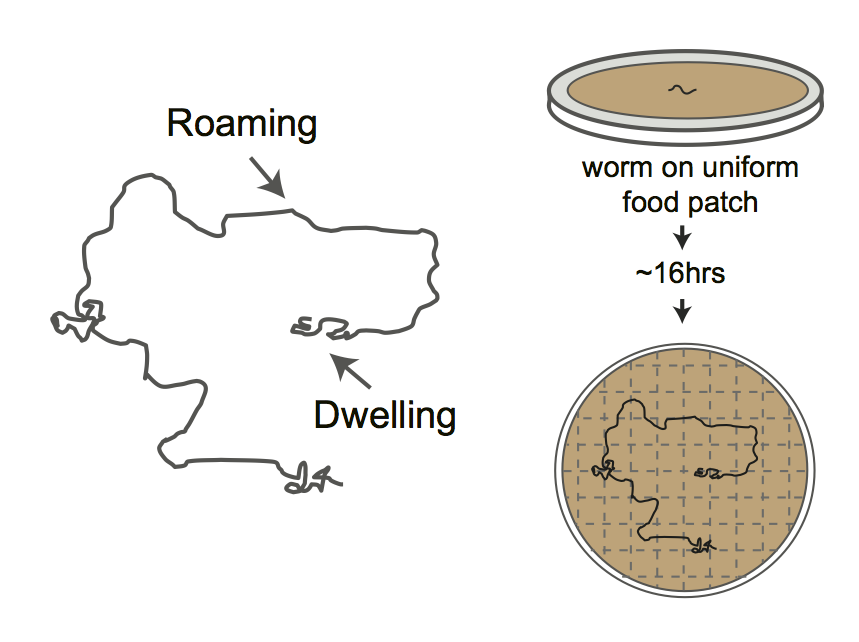
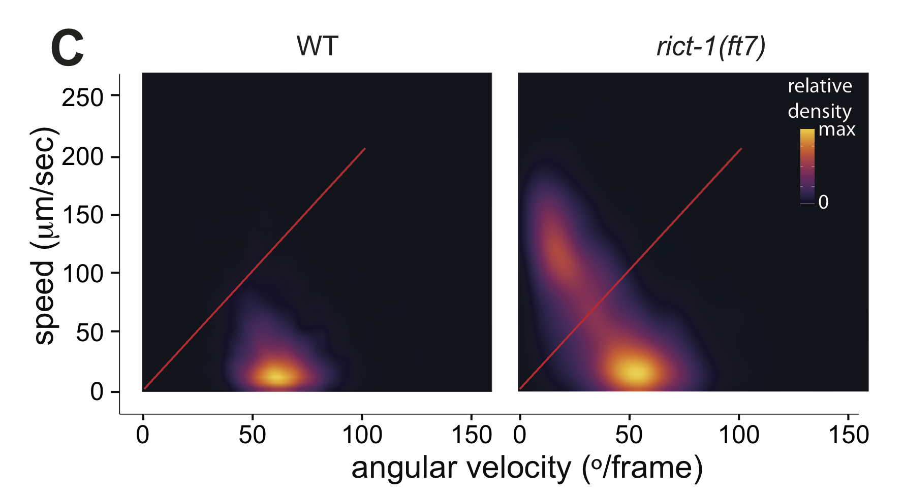
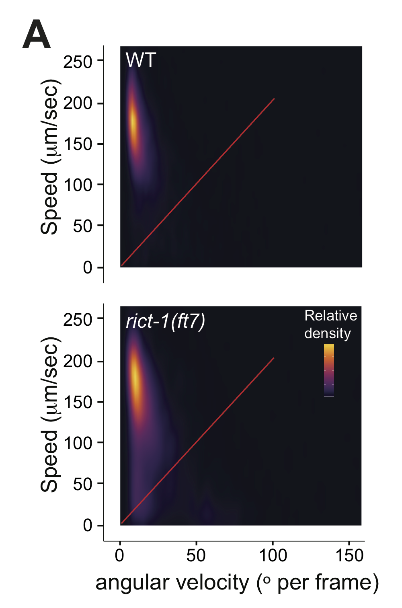

Figure 4
Intestinal mTORC2 alters foraging behaviors
4A-B
img.path <- file.path(pathname, "figures","4A_cartoon.png")include_graphics(img.path) 
Figure 4A
Cartoon depicting foraging assay. Each plate contains a L4 hermaphrodite which is allowed to forage overnight on a uniform lawn of E. coli for ~ 16hrs. Lines show tracks on the bacterial lawn.
roam<-read.csv(file.path(pathname, "extdata","4B_4E_gridentry.csv")) %>%
mutate(strain = interaction(genotype, line, drop=TRUE),
strainDate = interaction(strain, date, drop=TRUE),
plateID = interaction(strainDate,plate, drop=TRUE),
total.boxes = 186)
library(lme4)
#simple ANOVA:
lms<-list(lm = lm(n_entries ~ genotype, data = roam),
lm.log = lm(log(n_entries) ~ genotype, data = roam),
lm.nboxes = lm(n_boxes ~ genotype, data = roam))
#glmms
glmms<-list(glmm.date = glmer(data=roam, n_entries ~ genotype + (1|date), family="poisson"),
glmm.strainDate = glmer(data=roam, n_entries ~ genotype + (1|strainDate), family="poisson"),
glmm.obs = glmer(data=roam, n_entries ~ genotype + (1|date) + (1|plateID), family="poisson"),
glmm.obsOnly = glmer(data=roam, n_entries ~ genotype + (1|plateID), family="poisson"),
glmm.fixDate = glmer(data=roam, n_entries ~ date + genotype + (1|plateID), family="poisson"),
glmm.fixDate.ranStrain = glmer(data=roam, n_entries ~ date + genotype + (1|plateID) + (1|strain), family="poisson"),
glmm.nest = glmer(data=roam, n_entries ~ genotype + (1|date/plateID), family="poisson"), #nested individual random effect
glmm.binom = glmer(data=roam,
formula = cbind(roam$n_boxes, roam$total.boxes - roam$n_boxes) ~ genotype + (1|date/plateID),
family="binomial"))
#non mixed glms
glms <- list(glm = glm(data=roam, n_entries ~ date + genotype, family="poisson"),
glm.nb = glm.nb(data=roam, n_entries ~ date + genotype, init.theta = 1, link="log"),
glm.binom = glm(data=roam, cbind(roam$n_boxes, roam$total.boxes - roam$n_boxes) ~ date + genotype, family="binomial"))
mods<-c(lms, glms, glmms)
# Not run #
###checking distributional assumptions:
# library(DHARMa)
# sim.resids<-lapply(mods[1:length(mods)], function(x) {
# simulationOutput <- simulateResiduals(fittedModel = x, n=250, refit = T)
# #par(mfrow = c(2,2))
# #plotResiduals(roam$genotype, simulationOutput$scaledResiduals)
# #plotResiduals(roam$date, simulationOutput$scaledResiduals)
# #plotResiduals(roam$strain, simulationOutput$scaledResiduals)
# return(simulationOutput)
# })
#
# lapply(sim.resids, function(x) {
# plotSimulatedResiduals(simulationOutput = x)
# })
# using DHARMa package check distribution of residuals by predictors (takes a while using refit = T):
# (mods.dispersion <-
# lapply(glmms, function(x) {
# simulationOutput <- simulateResiduals(fittedModel = x, n=250, refit = T)
# testOverdispersion(simulationOutput = simulationOutput)
# }))
# nested glmm looks rougly the best for both count date (n_entries) and binary data (n_boxes/total)
# although there is still some small effect of
# predicted value on residual quantiles
# end not run #strains <- c("N2", "ft7", "ft7;ex[ges-1p]", "ft7;ex[rict-1p]")
days <- c("10_1_16", "10_5_16", "10_9_16")
## remove outliers:
roam %<>% dauergut::flag_outliers(df = ., lin.mod = mods$lm, threshold = 4, noplot = TRUE)
roam.resc <- roam %>% subset(genotype %in% strains & date %in% days) %>%
mutate(genotype = factor(genotype, levels = strains))
glmm.nest <- update(mods$glmm.nest, data = roam.resc[roam.resc$outlier.status == FALSE,] )
stan.glmm <- stan_glmer(data = roam.resc[roam.resc$outlier.status == FALSE,],
formula = n_entries ~ genotype + (1|date/plateID), family = "poisson",
iter = 4000)
contrasts<-dauergut::tukey_contrasts(glmm.nest, "genotype")
mixed<-stan.glmm %>% getStan_CIs(type = "roam")
plot.contrasts<-c("",contrasts$prange[1],"","")
plot.contrasts.2<-c("","",contrasts$prange[4:5])
labels <- c("WT", "rict-1(ft7)", "rict-1(ft7); +ges-1p::rict-1", "rict-1(ft7); +rict-1p::rict-1") %>% stringr::str_wrap(width = 10)
p<-dauergut::plot_CIs(roam.resc, title='Intestinal TORC2 regulates adult foraging',
plot.contrasts=plot.contrasts, plot.contrasts.2 = plot.contrasts.2,ypos = 800, offset = 0, type = "grid", labels = labels)p
Figure 4B
rict-1 acts in the intestine to regulate foraging behavior. Foraging is increased in rict-1 mutants, which is rescued using the intestine-specific ges-1 promoter. Plot shows exploratory behavior of indicated strains. Each purple dot represents data from a single worm. Median is indicated by a horizontal purple line; error bars are quartiles. Light gray thin and thick vertical bars at right indicate Bayesian 95% and 75% credible intervals, respectively. Numbers in parentheses below indicate the total number of animals examined during 3 independent days of assays. P-values shown are between indicated values; *** and *** - different from WT and rict-1 at P<0.001, respectively (GLMM with Tukey-type multivariate-t post-hoc adjustment). P-values of differences in means relative to wild-type and corresponding mutant animals are indicated in black and red, respectively.
library(sjPlot)
sjt.glmer(glmm.nest, depvar.labels = "number of entries", show.se = TRUE)| number of entries | |||||
| IRR | CI | std. Error | p | ||
| Fixed Parts | |||||
| (Intercept) | 206.43 | 144.40 – 295.12 | 37.64 | <.001 | |
| genotype (ft7) | 2.21 | 1.67 – 2.93 | 0.32 | <.001 | |
| genotype (ft7;ex[ges-1p]) | 1.10 | 0.88 – 1.37 | 0.13 | .425 | |
| genotype (ft7;ex[rict-1p]) | 0.68 | 0.51 – 0.90 | 0.10 | .008 | |
| Random Parts | |||||
| τ00, plateID:date | 0.154 | ||||
| τ00, date | 0.070 | ||||
| NplateID:date | 96 | ||||
| Ndate | 3 | ||||
| ICCplateID:date | 0.126 | ||||
| ICCdate | 0.057 | ||||
| Observations | 96 | ||||
| Deviance | 3.877 | ||||
knitr::kable(drop1(glmm.nest, test = "Chisq"))| Df | AIC | LRT | Pr(Chi) | |
|---|---|---|---|---|
| NA | 1160.628 | NA | NA | |
| genotype | 3 | 1206.062 | 51.4344 | 0 |
4C-D
#### see extdata/roaming and speed_curvature function for data and analysis, respectively - highly memory intensiveimg.path <- file.path(pathname, "figures","4C_roam_dwell_density.png")
include_graphics(img.path)
Figure 4C
Live tracking of foraging behavior. Shown is a representative assay. n > 20 animals per assay. Density plot shows mean speed and angular velocity from tracks binned over 10 sec intervals imaged at 3 frames/sec. Red line indicates delineation of roaming (upper region) and dwelling (lower region) behavior.
strains <- c("N2","ft7")
roam_beh <- read.csv(file.path(pathname, "extdata","4D_roam_dwell_all.csv")) %>%
mutate(genotype = factor(genotype, levels = strains), pct = pct.roam, plateID = interaction(date,genotype,plate))
roam.t <- t.test(roam_beh[roam_beh$genotype == strains[1],]$pct, roam_beh[roam_beh$genotype == strains[2],]$pct)
glmm <- lme4::glmer(data = roam_beh, cbind(roam, dwell) ~ genotype + (1|plateID), family = binomial)
stan.glmm <- stan_glmer(data = roam_beh,
formula = cbind(roam, dwell) ~ genotype + (1|plateID),
family = binomial,
iter = 4000)
mixed <- stan.glmm %>% getStan_CIs(type = "dauer")
contrasts <- data.frame(p.value = roam.t$p.value) %>% dauergut::prange()
plot.contrasts <- c("",contrasts$prange)
labels = c("WT", "rict-1(ft7)")
p<-dauergut::plot_CIs(roam_beh, plot.contrasts = plot.contrasts, type = "dauer", title = "", ypos = 1.05, offset = 0, labels = labels) + labs(subtitle = "", y = "proportion roaming")
odds.ratio <- summary(stan.glmm)[2,1] %>% exp()p
Figure 4D
Quantification of roaming and dwelling states. rict-1 mutants show increased roaming, corresponding to an odds ratio of 3.477. Dots show proportion of track time bins in which animals were roaming, with each dot reflecting one assay. Light gray thin and thick vertical bars at right indicate Bayesian 95% and 75% credible intervals, respectively. P-value shown is with respect to wild-type (Welch’s t-test).
4E
pdfr-1 is epistatic to rict-1 in foraging behavior.
roam<-read.csv(file.path(pathname, "extdata","4B_4E_gridentry.csv")) %>%
mutate(strain = interaction(genotype, line, drop=TRUE),
strainDate = interaction(strain, date, drop=TRUE),
plateID = interaction(strainDate,plate, drop=TRUE),
total.boxes = 186)strains <- c("N2", "ft7", "pdf-1", "pdfr-1", "pdfr-1;ft7")
days <- c("12_20_16", "1_5_17", "1_8_17")
## remove outliers (based on analysis, below):
lm <- lm(n_entries ~ genotype, data = roam)
roam %<>% dauergut::flag_outliers(df = ., lin.mod = lm, threshold = 4, noplot = TRUE)
roam.pdfr1 <- roam %>% subset(genotype %in% strains & date %in% days) %>%
mutate(genotype = factor(genotype, levels = strains))
glmm.nest <-glmer(data = roam.pdfr1[roam.pdfr1$outlier.status == FALSE,], formula = n_entries ~ genotype + (1|date/plateID), family = "poisson")
stan.glmm <- stan_glmer(data = roam.pdfr1[roam.pdfr1$outlier.status == FALSE,],
formula = n_entries ~ genotype + (1|date/plateID), family = "poisson",
iter = 4000, adapt_delta = 0.99)
contrasts<-dauergut::tukey_contrasts(glmm.nest, "genotype")
mixed<-stan.glmm %>% getStan_CIs(type = "roam")
plot.contrasts<-c("",contrasts$prange[1:4])
plot.contrasts.2<-c("","","","",contrasts$prange[10])
labels <- c("WT", "rict-1(ft7)", "pdf-1(tm1996)", "pdfr-1(ok3425)", "rict-1(ft7); pdfr-1(ok3425)") %>%
stringr::str_wrap(width=10)
(p<-dauergut::plot_CIs(roam.pdfr1, title='rict-1 effects on roaming behavior depends on pdfr-1 signaling', plot.contrasts=plot.contrasts, plot.contrasts.2 = plot.contrasts.2,ypos = 800, offset = 50, type = "grid", labels = labels))
Figure 4E
TORC2 requires PDFR-1 neuropeptide signaling to modulate foraging behavior. Exploratory behavior of indicated strains. Each purple dot represents data from a single worm. Median is indicated by a horizontal purple line; error bars are quartiles. Light gray thin and thick vertical bars at right indicate Bayesian 95% and 75% credible intervals, respectively. Numbers in parentheses below indicate the total number of animals examined during 3 independent days of assays. P-values shown are between indicated values; *** and *** - different from WT and rict-1 at P<0.001, respectively (GLMM with Tukey-type multivariate-t post-hoc adjustment). P-values of differences in means relative to wild-type and corresponding mutant animals are indicated in black and red, respectively.
library(sjPlot)
sjt.glmer(glmm.nest, depvar.labels = "number of entries", show.se = TRUE)| number of entries | |||||
| IRR | CI | std. Error | p | ||
| Fixed Parts | |||||
| (Intercept) | 216.91 | 169.40 – 277.74 | 27.36 | <.001 | |
| genotype (ft7) | 1.87 | 1.33 – 2.62 | 0.32 | <.001 | |
| genotype (pdf-1) | 0.20 | 0.14 – 0.29 | 0.04 | <.001 | |
| genotype (pdfr-1) | 0.23 | 0.17 – 0.32 | 0.04 | <.001 | |
| genotype (pdfr-1;ft7) | 0.27 | 0.19 – 0.38 | 0.05 | <.001 | |
| Random Parts | |||||
| τ00, plateID:date | 0.231 | ||||
| τ00, date | 0.006 | ||||
| NplateID:date | 80 | ||||
| Ndate | 3 | ||||
| ICCplateID:date | 0.187 | ||||
| ICCdate | 0.005 | ||||
| Observations | 80 | ||||
| Deviance | 4.914 | ||||
knitr::kable(drop1(glmm.nest, test = "Chisq"))| Df | AIC | LRT | Pr(Chi) | |
|---|---|---|---|---|
| NA | 871.3411 | NA | NA | |
| genotype | 4 | 976.1329 | 112.7918 | 0 |
knitr::kable(contrasts, caption = "pairwise comparisons (GLMM)")| contrast | rate.ratio | SE | df | z.ratio | p.value | prange |
|---|---|---|---|---|---|---|
| N2 - ft7 | 0.5352987 | 0.0922775 | NA | -3.6251984 | 0.0026596 | ** |
| N2 - pdf-1 | 5.0715519 | 0.9750831 | NA | 8.4448284 | 0.0000000 | *** |
| N2 - pdfr-1 | 4.3260837 | 0.7244682 | NA | 8.7460751 | 0.0000000 | *** |
| N2 - pdfr-1;ft7 | 3.6987388 | 0.6178786 | NA | 7.8298886 | 0.0000000 | *** |
| ft7 - pdf-1 | 9.4742466 | 1.8960916 | NA | 11.2355198 | 0.0000000 | *** |
| ft7 - pdfr-1 | 8.0816257 | 1.3934233 | NA | 12.1192955 | 0.0000000 | *** |
| ft7 - pdfr-1;ft7 | 6.9096728 | 1.1891220 | NA | 11.2316990 | 0.0000000 | *** |
| pdf-1 - pdfr-1 | 0.8530099 | 0.1658743 | NA | -0.8175773 | 0.9248565 | p~0.92 |
| pdf-1 - pdfr-1;ft7 | 0.7293111 | 0.1413884 | NA | -1.6282147 | 0.4775188 | p~0.48 |
| pdfr-1 - pdfr-1;ft7 | 0.8549855 | 0.1430890 | NA | -0.9361392 | 0.8821859 | p~0.88 |
4F
roam<-read.csv(file.path(pathname, "extdata", "4F_pdf2_roam.csv")) %>%
mutate(strainDate = interaction(genotype, date, drop=TRUE),
plateID = interaction(strainDate,plate, drop=TRUE),
total.boxes = 186)strains <- c("N2", "ft7", "pdf-2", "pdf-2;ft7", "ft7;ex(pdf2p_pdf)", "WT;ex(pdf2p_pdf2)")
## remove outliers (based on analysis, below):
linmod <- lm(n_entries ~ genotype, data = roam)
roam %<>% dauergut::flag_outliers(df = ., lin.mod = linmod, threshold = 4, noplot = TRUE)
roam.pdf2 <- roam %>% subset(genotype %in% strains) %>%
mutate(genotype = factor(genotype, levels = strains))
glmm.nest <-glmer(data = roam.pdf2[roam.pdf2$outlier.status == FALSE,], formula = n_entries ~ genotype + (1|date/plateID), family = "poisson")
stan.glmm <- stan_glmer(data = roam.pdf2[roam.pdf2$outlier.status == FALSE,],
formula = n_entries ~ genotype + (1|date/plateID),
family = "poisson",
iter = 4000,
adapt_delta = 0.99)
contrasts<-dauergut::tukey_contrasts(glmm.nest, "genotype")
mixed<-stan.glmm %>% getStan_CIs(type = "roam")
plot.contrasts<-c("",contrasts$prange[1:5])
plot.contrasts.2<-c("","",contrasts$prange[6:9])
labels <- c("WT",
"rict-1(ft7)",
"pdf-2(tm4393)",
"pdf-2(tm4393); rict-1(ft7)",
"rict-1(ft7); Ex[pdf2p::pdf2]",
"Ex[pdf2p::pdf2]") %>%
stringr::str_wrap(width=10)
(p<-dauergut::plot_CIs(roam.pdf2[roam.pdf2$outlier.status == FALSE,], title='rict-1 effects on roaming behavior depends on pdf-2 signaling', plot.contrasts=plot.contrasts, plot.contrasts.2 = plot.contrasts.2,ypos = 800, offset = 100, type = "grid", labels = labels))
Figure 4F
PDF-2 signaling acts downstream of TORC2 in the regulation of foraging. Overexpression of pdf-2 specifically suppresses the rict-1 foraging defect. Exploratory behavior of indicated strains is shown. Each purple dot represents data from a single worm. Median is indicated by a horizontal purple line; error bars are quartiles. Light gray thin and thick vertical bars at right indicate Bayesian 95% and 75% credible intervals, respectively. Numbers in parentheses below indicate the total number of animals examined during 3 independent days of assays. A single pdf-1p::pdf-2 transgene was examined. P-values shown are between indicated values; *** and ^^^ - different from WT and rict-1 at P<0.001, respectively (GLMM with Tukey-type multivariate-t post-hoc adjustment). P-values of differences in means relative to wild-type and corresponding mutant animals are indicated in black and red, respectively.
S2A-B
devtools::install_github("rasmusab/bayesian_first_aid")
strains <- c("N2","rict-1(ft7)")
roam_beh <- read.csv(file.path(pathname, "extdata","S2B_starved_roam_dwell_all.csv")) %>%
mutate(genotype = factor(genotype, levels = strains), pct = pct.roam, plateID = interaction(date,genotype,plate))
roam.t <- t.test(roam_beh[roam_beh$genotype == strains[1],]$pct, roam_beh[roam_beh$genotype == strains[2],]$pct)
glmm <- lme4::glmer(data = roam_beh, cbind(roam, dwell) ~ genotype + (1|plateID), family = binomial)
stan.glmm <- stan_glmer(data = roam_beh,
formula = cbind(roam, dwell) ~ genotype + (1|plateID),
family = binomial,
iter = 4000)
mixed <- stan.glmm %>% getStan_CIs(type = "dauer")
contrasts <- data.frame(p.value = roam.t$p.value) %>% dauergut::prange()
plot.contrasts <- c("",contrasts$prange)
labels <- c("WT", "rict-1(ft7)")
p<-dauergut::plot_CIs(roam_beh, plot.contrasts = plot.contrasts, type = "dauer", title = "", ypos = 1.05, offset = 0, labels = labels) + labs(subtitle = "", y = "proportion roaming") +
theme(axis.text.x = element_text(size = 12),
axis.text.y = element_text(size = 12),
axis.line = element_line(size=0.2),
axis.title = element_text(size=16))#run speed_curvature_4x_parallel to reproduce these data from raw position, speed data located in /extdata/
img.path <- file.path(pathname, "figures","S2A_starve_roam_density.png")
include_graphics(img.path)
p
Figure S2A-B
(left) Live tracking of foraging behavior in starved worms. Shown is a representative assay. n > 20 animals per assay. Density plot shows mean speed and angular velocity from tracks binned over 10 sec intervals imaged at 3 frames/sec. Red line indicates delineation of roaming and dwelling behavior. (right) Quantification of roaming and dwelling states. Dots show proportion of track time bins in which animals were roaming, with each dot reflecting one assay. Light gray thin and thick vertical bars at right indicate Bayesian 95% and 75% credible intervals, respectively. P-value shown is with respect to wild-type (Welch’s t-test).
S2C
strains<-c("N2","rict-1(ft7)","rict-1(ft7);pdfr-1")
foods = "OP50"
pdfr_dauer<-read.csv(file.path(pathname, "extdata","S2C_pdfr_dauer.csv")) %>% format_dauer(p.dauer = "non")
pdfr_dauer %<>% mutate(adj.pct = case_when(.$pct == 0 ~ 0.01, .$pct == 1 ~ 0.99, TRUE ~ .$pct))
lm <- pdfr_dauer %>% dauer_ANOVA()
stan.glmm <- pdfr_dauer %>% run_dauer_stan
contrasts<-dauergut::tukey_contrasts(lm,"genotype")
mixed<-stan.glmm %>% getStan_CIs(type="dauer")
plot.contrasts<-c("",contrasts$prange[1:2])
plot.contrasts.2<-c("","",contrasts$prange[3])
labels = c("WT", "rict-1(ft7)", " rict-1(ft7); pdfr-1(ok3425)") %>% stringr::str_wrap(width = 10)
p<-dauergut::plot_CIs(pdfr_dauer, title='', plot.contrasts, plot.contrasts.2, ypos = 1.1, offset = 0.050, type = "dauer", labels = labels)p
Figure S2C
pdfr-1 mutations do not suppress rict-1 dauer formation phenotypes. Each dot indicates the average number of dauers formed in a single assay. Horizontal bar indicates median. Light gray thin and thick vertical bars at right indicate Bayesian 95% and 75% credible intervals, respectively. Numbers in parentheses below indicate the number of independent assays with at least 27 animals each. P-value shown in comparison to rict-1 mutants.
library(sjPlot)
sjt.lm(lm, depvar.labels = "number of entries", show.se = TRUE, show.fstat = TRUE)| number of entries | |||||
| B | CI | std. Error | p | ||
| (Intercept) | 0.15 | 0.01 – 0.28 | 0.06 | .041 | |
| genotype | |||||
| rict-1(ft7) | 0.74 | 0.53 – 0.95 | 0.10 | <.001 | |
| rict-1(ft7);pdfr-1 | 0.84 | 0.66 – 1.03 | 0.08 | <.001 | |
| Observations | 16 | ||||
| R2 / adj. R2 | .894 / .877 | ||||
| F-statistics | 54.659*** | ||||
knitr::kable(contrasts, caption = "pairwise comparisons (ANOVA)")| contrast | estimate | SE | df | t.ratio | p.value | prange |
|---|---|---|---|---|---|---|
| N2 - rict-1(ft7) | -0.7407588 | 0.0965166 | 13 | -7.674941 | 0.0000032 | *** |
| N2 - rict-1(ft7);pdfr-1 | -0.8440491 | 0.0842466 | 13 | -10.018797 | 0.0000000 | *** |
| rict-1(ft7) - rict-1(ft7);pdfr-1 | -0.1032903 | 0.0901806 | 13 | -1.145372 | 0.5037337 | p~0.5 |